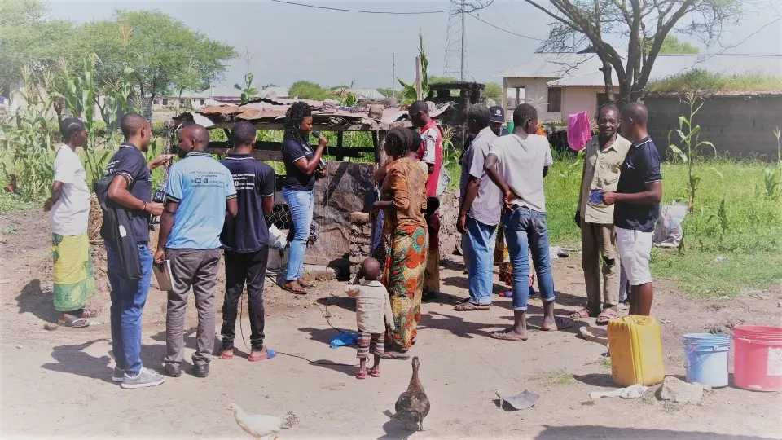
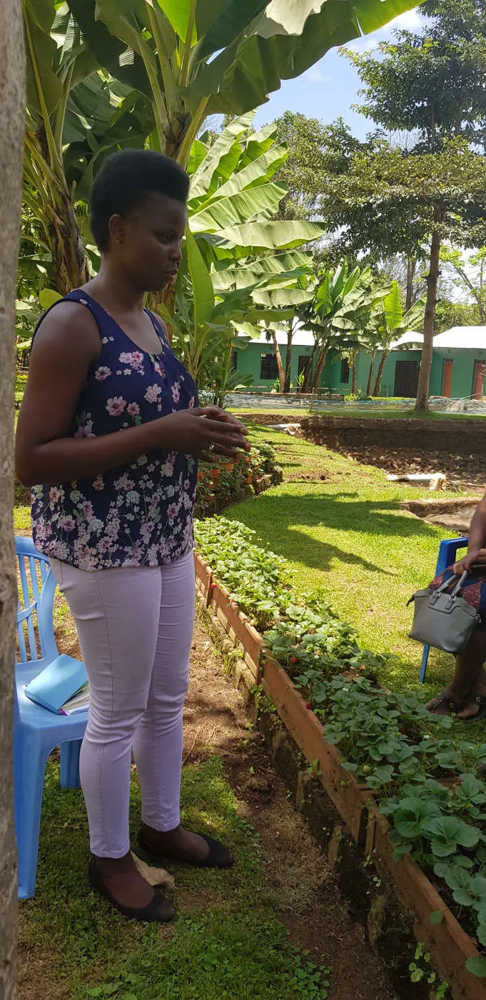
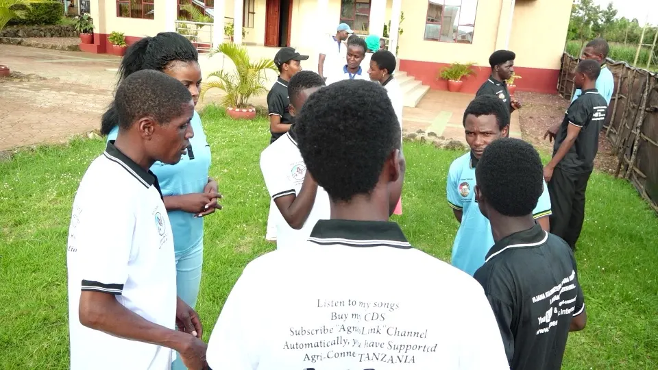
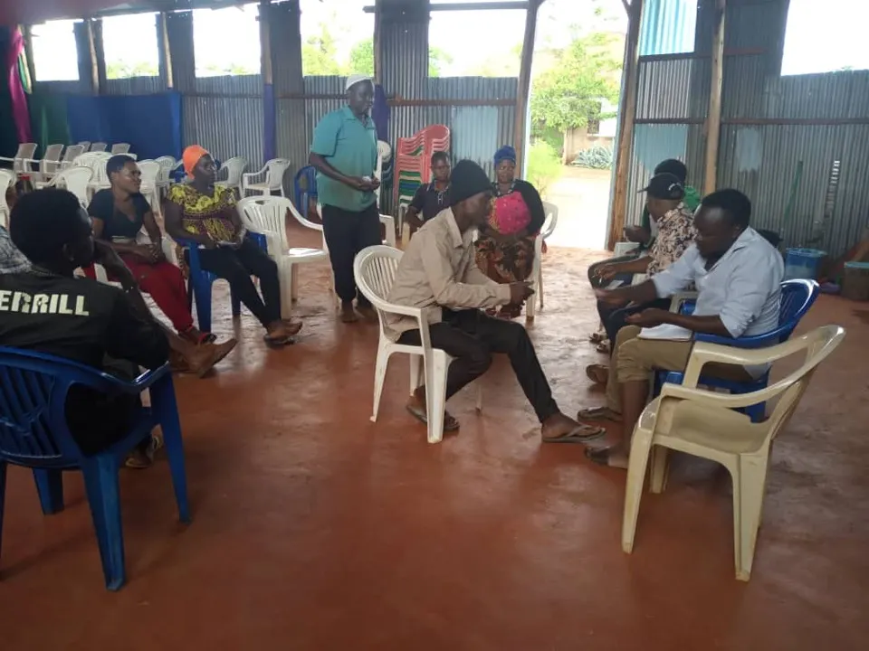
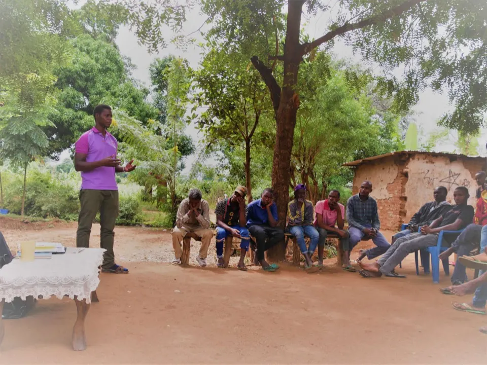
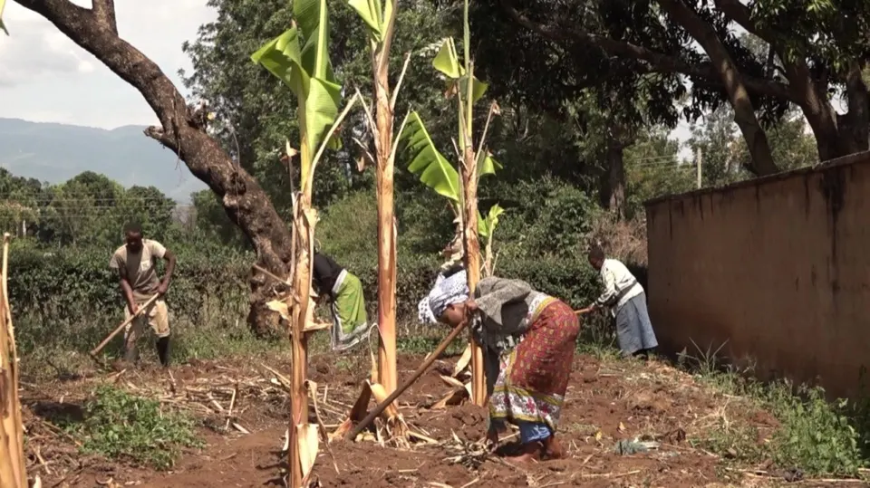

Agri-Connect Tanzania
What and how we do
what and how WE DO IT
What we do: We support youth to support themselves Mind set changing, Capacity building, Resources provision
"What really turned me over was to see how practically humble start can turn to great things; but also big and positive responce from people especially young people who showed strongly how and why they need this idea and that they are ready for it. All these pushed me to work very hard because the responce was beyond and above the stage I was prepared for at that time.\ From just a simple idea shared on facebook (July, 2018), TO an NGO called "AGRI-CONNECT TANZANIA" (August 2019), and today it is saving millions of people in need particularly young generation"\ \ Because of that, and all cooperation from our supporters, and the community where the target group belongs; I am strong and ready to offer my fully energy to the vision, my wish and ambitious is to see community developemnt through supporting people in need to support themselves.
what we do and how
Mind set changing
This goes through different processes using "flexibility" as a method.
- By supporting and guiding young people into groups where they meet once/twice a week to discuss Entrepreneur productive topics, instead of hanging around doing nothing.
- By doing seminars and workshops. The topics, focus on; 1. what is needed on the target group 2. on “Learn and Do” principle
- Exposure - By exposure we do it as follows:
- Young people in the groups travelling outside their communities to learn from others.
- Having external trainers in the future, will also bring the power of exposure to the young people
NB: Training is the first big investment the organization is doing accordingly to young people in groups.
Transformation process especially to those who are hopeless and may be in addictions is been done. The organization support them, through transformation process that helpes them to realize their lost talents and potentials and start working on them.


Capacity Building
- We believe the process of Mindset changing will build capacity into young people that they will start realizing all they can do and how they can do them.
- They will also be able to start being creative and innovative to employ their environment positively, productively and efficiently.
- They will be able to realize, their life improvements and success depend totally on themselves. Thus they should stop hanging around while blaming others or blaming governments for their backwardness.
Resources Provision
- Resource provision are done to young people who have gone the first two processes (Mind set Changing&capacity building). After this two processes they become clear on what they like to do, what they can do, how they can do it and and start doing them. Start doing them step by step out of their own effort, shows they have compassion and commitment; and thats what attracts A-CT for its material provision. and in order for us to be able to prvide we need your support. You can support us to reach those who are not yet reached, by your ideas and opinions, your money and even with any related materials including agricultural machines.
How the provision is done:
- The provision is been done through the system of Micro credit which its structure follows the Organization rules and regulations.
- The organization aims to support youth to support themselves, and be independent candidate in their nations.
- In the process of micro credit, there is a contract to be signed between the provider and the loan receiver. The receiver is either a young person or the group through the group's already builded financial system.

Trainings, Seminars & Workshops

AGRI-CONNECT TANZANIA - TRAININGS
Young people need to be more equiped on practical knowledge as a first capital. So Agri-Connet Tanzania invest and will invest more on trainings. This is and will be done through; Training young people in groups, faciliatating youth to receive trainings away from their home, and to invite Trainers from different places.

AGRI-CONNECT TANZANIA - SEMINARS & WORKSHOPS
Young people are encouraged to attend and participate full on different workshops planned by Agri-Connect Tanzania arround them. They are also encouraged to attend other worksphops done by our partners when the topics are of their need.

AGRI-CONNECT TANZANIA - YOUTH SELF MEETINGS
Groups under Agri-Connect Tanzania meets once or twice in a week. During the meeting they discuss different topics arround their areas of competencies following the manual provided. In all the meetings minutes are written and all unaswered questions are noted and be reported to the management by the group Ambassador. \ \ In every meeting the song "PAMOJA KWA UMOJA" by Agnes Link, is sang by Youth together while holding their hands. Togetherness is power, separation is weakness.

AGRI-CONNECT TANZANIA - MEETINGS
Depending on the availability of budget, it is the plan and wish of Agri Connect Tanzania team to do meetings often in all regions with young people in Groups. This has already be happening step by step. Since we started informaly August 2018 and formally from August 2019, we have managed to reach four regions in Tanzania. Bagamoyo, Shinyanga, Kilimanjaro and Arusha. we could have gone further but the big challenge is the availability of resourcess in terms of money. Agri Connect Tanzania needs support from others to manage its positive vision towards community development. \ So we invite you all to support.

AGRI-CONNECT TANZANIA - LEARN AND DO
Agri Connect Tanzania, we believe on practical knowledge. This is because we have seen young people in the street or those who are hopeless hanging arround, are also including graduates. Therefore, young people in groups are highly encouraged to maintain a principal of "learn and do"\ \ They are encouraged whatever they decide to invest on they should start small, that they also have a room to keep learning more and more while doing.